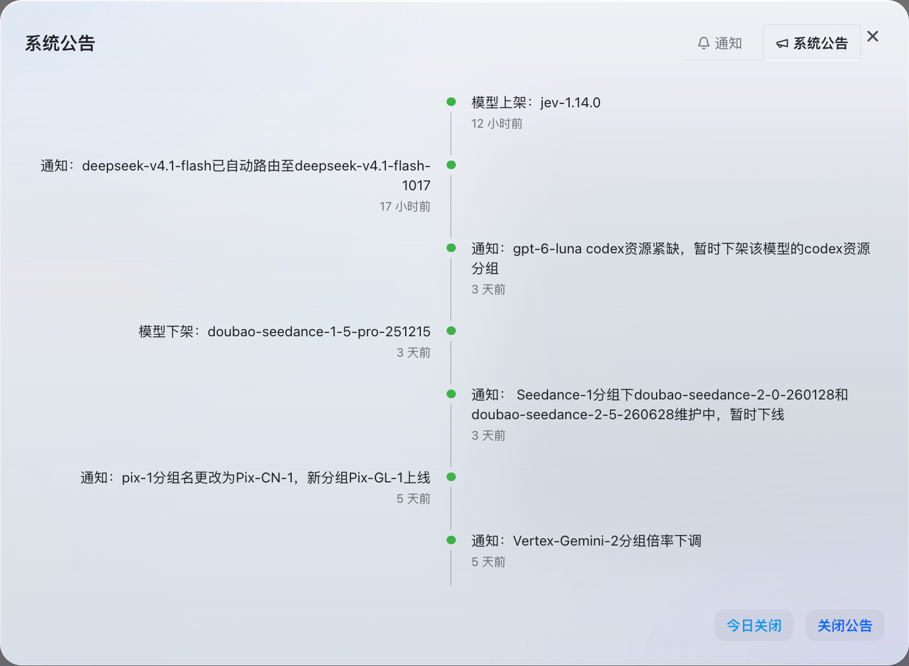
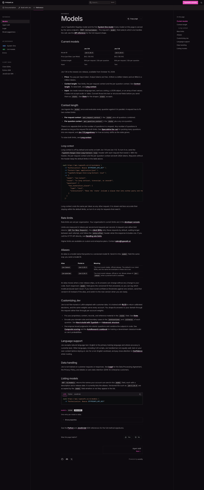
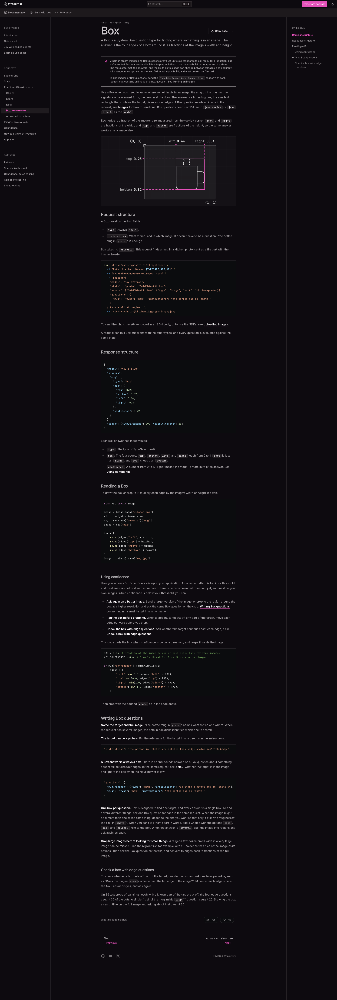
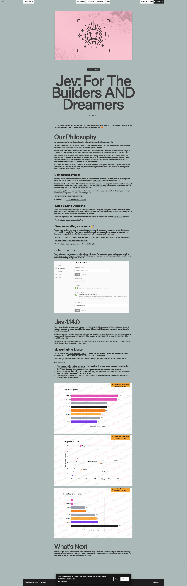

TypeSafe Jev 1.14.0 使用教程：System One 决策 API 从入门到 box 定位
本教程面向要把 TypeSafe Jev jev-1.14.0 接到业务代码里的工程师：从申请/配置 API Key、发出第一个请求，到四种题型、多题并行、图片 + box、长上下文、置信度落地，再到排错。目标是一份可照抄改写的动手指南，不是产品软文。
先对齐心智模型：Jev 是 TypeSafe 的 System One 决策模型。你把业务上下文放进 state，再声明一组带类型的 questions；模型对同一份 state 并行评估每道题，返回可分支、可阈值的结构化答案。它不陪聊、不追求长文生成——chat LLM 给你的是叙述，Jev 给你的是可编程的 smart-if。
版本钉死建议： 示例一律使用模型 ID jev-1.14.0。别名要小心：
| 别名 | 文档含义 | 实践建议 |
|---|---|---|
jev-preview |
指向最新预览构建（发布窗口内对应 jev-1.14.0） |
可试新特性；阈值标定后请改钉版本号 |
jev-latest |
指向「当前稳定」并会在发布后滚动 | 不要当生产 SLA；响应里的 model 字段才是真实版本 |
官方博客（2026-10-14）写明：jev-latest 会在约一周后切到 1.14；在此前后，你的置信度阈值若钉在某一版上，请求里请直接写 jev-1.14.0 或 jev-1.13.0。

1. 从申请 Key 到请求骨架
1.1 拿 Key
- 登录 TypeSafe 控制台，创建 API Key。
- 只放服务端环境变量，不要写进前端或仓库：
export TYPESAFE_API_KEY="your-api-key"
- 可选：用
GET https://api.typesafe.ai/v1/models看账号可见的模型名与别名（版本号 ID 即使未出现在列表里，请求里通常仍可直接写）。
1.2 唯一决策端点
POST https://api.typesafe.ai/v1/systemone
Authorization: Bearer <token>
Content-Type: application/json
危险区能力用额外请求头打开（按需、按请求）：
TypeSafe-Danger-Zone-Images: true
TypeSafe-Danger-Zone-Long-Context: true
1.3 Body 字段
| 字段 | 必填 | 含义 |
|---|---|---|
model |
是 | 模型 ID 或别名；本教程固定 jev-1.14.0 |
state |
是 | 被评估内容：字符串 / JSON 对象 / 数组 |
questions |
是 | 命名问题字典；answers 用同名键回传 |
assets |
否 | 图片占位符 → 图像（multipart 的 part 或 data_base64） |
1.4 价格与默认上下文（与 1.13 对齐）
| 项 | 值 |
|---|---|
| 输入 | $0.042 / M tokens（文档亦写 $42 / B tokens） |
| 输出 | 免费 |
| 默认 per-request | 64k（state + 全部问题合计） |
| 默认 per-question | 32k（state + 任意单题） |
| 问题个数 | 无单独硬顶，只要塞进上述两道限制 |
设计含义：鼓励「一次塞 state、一次扇出很多原子题」；限制主要在 token，不在题数。

2. 第一个请求：打通一条 noul
noul 回答「是否为真」：返回 noul ∈ [0, 1]。接近 1 偏是，接近 0 偏否，接近 0.5 表示不确定。没有单独的 confidence 字段——不确定度就在概率里；若要与 choice 同一套门禁，可用 abs(2 * p - 1) 映射到 0–1。
curl -sS https://api.typesafe.ai/v1/systemone \
-H "Authorization: Bearer $TYPESAFE_API_KEY" \
-H "Content-Type: application/json" \
-d '{
"model": "jev-1.14.0",
"state": "I was charged twice for my subscription this month. Please refund the extra charge.",
"questions": {
"about_billing": {
"type": "noul",
"instructions": "Is this message about billing or charges?"
}
}
}'
典型成功响应形状（数值会随版本微调）：
{
"model": "jev-1.14.0",
"answers": {
"about_billing": { "type": "noul", "noul": 0.98 }
},
"usage": { "input_tokens": 120, "output_tokens": 12 }
}
可选：用 criteria 澄清「什么算是 / 什么算否」，减少边界歧义：
"about_billing": {
"type": "noul",
"instructions": "Is this message about billing or charges?",
"criteria": {
"true": "Mentions payment, invoice, refund, or subscription charge",
"false": "Unrelated to money or billing"
}
}
Python SDK 草图
包名以官方文档为准（typesafe-sdk）。客户端默认读环境变量中的 Key：
from typesafe_sdk import Noul, TypeSafeClient
state = "I was charged twice for my subscription this month. Please refund the extra charge."
with TypeSafeClient() as client:
resp = client.system_one(
model="jev-1.14.0",
state=state,
questions={
"about_billing": Noul(
instructions="Is this message about billing or charges?",
),
},
)
p = resp.answers["about_billing"].noul
print("noul=", p, "self_conf≈", abs(2 * p - 1))
写题习惯：问题 ID 只给你代码用，不会当题面送给模型；完整判断逻辑写在 instructions 里。state 若是对象，用反引号路径引用字段，例如 `ticket.body`。
3. 四种题型：怎么选、返回什么
| 类型 | 一句话 | 请求要点 | 返回字段 |
|---|---|---|---|
noul |
是否为真？ | instructions；可选 true/false criteria |
noul |
choice |
无序多选一 | 必填 criteria：选项名 → 说明 |
choice、probabilities、confidence |
score |
有序量尺上的位置 | 必填 criteria：有序等级数组（从 0） |
score、legend、probabilities、confidence |
box |
1.14 only 图上定位 | 只要 instructions，无 criteria；需图像危险区头 |
box{left,top,right,bottom}（0–1 分数）+ confidence |
选型口诀：
- 要进哪个队列 / 哪种意图 →
choice（选项互斥、无序）。 - 要紧急度、严重度、满意度档位 →
score（档位有序；score可以是期望值，落在两档之间）。 - 要「能不能自动放行」「有没有退款请求」→
noul。 - 要「目标在图上的哪里」→
box，并永远再配一道存在性noul。
写题原则（官方也反复强调）：一道题只问一个「瞬间判断」。「分析这条消息并给出处理方案」太宽——拆成原子题，在你的代码里加权组合。答案被约束在你给的选项/等级上，不会吐自由文本标签，这正是可上线的原因。
3.1 choice 最小例
"tone": {
"type": "choice",
"instructions": "What is the tone of this message?",
"criteria": {
"angry": "Upset or hostile",
"calm": "Neutral or polite",
"excited": "Enthusiastic"
}
}
3.2 score 最小例
"urgency": {
"type": "score",
"instructions": "How urgent is this message?",
"criteria": [
"Can wait",
"Needs attention this week",
"Needs attention today"
]
}
score 是概率加权期望，可能是 1.7 这类小数；用 legend 把数字映射回你写的等级文案，用 probabilities 看各档分布。
3.3 box 特殊规则（务必记住）
- 需要
TypeSafe-Danger-Zone-Images: true。 - 模型必须是
jev-1.14.0（或当时指向它的 preview 别名）。 - 总会返回一个框——没有「未找到」。目标不在图上时，框可能落到无关区域；所以同请求加
noul，低概率时丢弃框。 - 坐标相对图像宽高：
left < right，top < bottom，原点左上。
3.4 写好 state 与 instructions
state 可以是纯字符串，也可以是结构化 JSON。结构化时，在题面里用反引号引用路径，模型才知道「判哪一块」：
{
"ticket": {
"subject": "Duplicate charge",
"messages": [
{"from": "customer", "text": "I was charged twice for order A-104. Please refund."}
]
},
"order": {"id": "A-104", "charges": [{"amount_usd": 49}, {"amount_usd": 49}]},
"refund_policy": "Duplicate charges are eligible for a refund."
}
对应题面示例：
"refund_requested": {
"type": "noul",
"instructions": "Does `ticket.messages[0].text` request a refund?"
},
"policy_ok": {
"type": "noul",
"instructions": "Does `refund_policy` support the refund in `ticket.messages[0].text` given `order.charges`?"
}
常见坏写法与改法：
| 坏写法 | 为什么差 | 改法 |
|---|---|---|
| 「全面分析这张工单并给出处理建议」 | 不是瞬间判断，答案不可分支 | 拆成 queue / urgency / needs_human |
题 ID 叫 is_refund 但 instructions 很含糊 |
ID 不参与推理 | 把条件写全进 instructions |
| 把整本知识库塞进每题 | 撞 per-question 32k，变慢变不准 | state 只留本案相关；知识库先检索再塞摘要 |
| 用 chat 式 system prompt 堆角色扮演 | System One 不是对话模型 | 用 criteria 定义边界，用代码组合答案 |
复杂判断用 Composite scoring：多道 score/noul 并行，权重写在你的代码里；优先级变了只改权重，不必重写一整段 prompt。
4. 多题并行实战：工单路由（noul + choice + score）
下面把三类题塞进一次请求：是否要人工升级、进哪个队列、紧急度多少。这是最常见的落地模板——同一 state 投机扇出，代码决定用哪几个答案。
curl -sS https://api.typesafe.ai/v1/systemone \
-H "Authorization: Bearer $TYPESAFE_API_KEY" \
-H "Content-Type: application/json" \
-d '{
"model": "jev-1.14.0",
"state": {
"ticket": {
"subject": "API 500 on checkout",
"body": "Checkout started returning 500 about 20 minutes ago. No orders can complete. Please escalate."
},
"sla": "P1 if revenue path is blocked."
},
"questions": {
"needs_human": {
"type": "noul",
"instructions": "Does `ticket.body` require immediate human escalation given `sla`?"
},
"queue": {
"type": "choice",
"instructions": "Which queue should own `ticket`?",
"criteria": {
"billing": "Payment, invoice, or subscription charges",
"technical": "Bugs, outages, or integration errors",
"sales": "Pricing, plans, or account upgrades"
}
},
"urgency": {
"type": "score",
"instructions": "How urgent is `ticket` for engineering?",
"criteria": [
"Can wait until next business day",
"Needs attention this week",
"Needs attention today / revenue blocked"
]
}
}
}'
示例响应形状：
{
"model": "jev-1.14.0",
"answers": {
"needs_human": { "type": "noul", "noul": 0.93 },
"queue": {
"type": "choice",
"choice": "technical",
"confidence": 0.95,
"probabilities": {
"billing": 0.02,
"technical": 0.96,
"sales": 0.02
}
},
"urgency": {
"type": "score",
"score": 1.8,
"confidence": 0.7,
"legend": {
"0": "Can wait until next business day",
"1": "Needs attention this week",
"2": "Needs attention today / revenue blocked"
},
"probabilities": { "0": 0.05, "1": 0.1, "2": 0.85 }
}
},
"usage": { "input_tokens": 380, "output_tokens": 60 }
}
同请求的 Python SDK 草图
from typesafe_sdk import Choice, Noul, Score, TypeSafeClient
state = {
"ticket": {
"subject": "API 500 on checkout",
"body": "Checkout started returning 500 about 20 minutes ago. No orders can complete.",
},
"sla": "P1 if revenue path is blocked.",
}
with TypeSafeClient() as client:
resp = client.system_one(
model="jev-1.14.0",
state=state,
questions={
"needs_human": Noul(
instructions="Does `ticket.body` require immediate human escalation given `sla`?",
),
"queue": Choice(
instructions="Which queue should own `ticket`?",
criteria={
"billing": "Payment, invoice, or subscription charges",
"technical": "Bugs, outages, or integration errors",
"sales": "Pricing, plans, or account upgrades",
},
),
"urgency": Score(
instructions="How urgent is `ticket` for engineering?",
criteria=[
"Can wait until next business day",
"Needs attention this week",
"Needs attention today / revenue blocked",
],
),
},
)
print(resp.answers["needs_human"].noul)
print(resp.answers["queue"].choice, resp.answers["queue"].confidence)
print(resp.answers["urgency"].score, resp.answers["urgency"].confidence)
性能直觉： 官方 cookbook 用「13 题一批 vs 13 次单题」说明：批处理可显著更便宜、更快，且答案形态不变。习惯「一题一请求」的 agent/脚本，改成扇出后收益最大。
若某题依赖上一题的答案才能构造下一题的 state/选项（例如层级分类），才做第二次请求；否则优先同请求并行，在代码里忽略用不上的答案。
5. 图片 + box：multipart 与 noul 配对
图像与 box 属于 danger zone（官方称 dreamer-ready：欢迎原型探索，接口形状与精度仍可能演进，勿默认当生产真理）。每次含图或 box 的请求必须带：
TypeSafe-Danger-Zone-Images: true
官方提醒：多模态整体弱于纯文本；复杂判断请拆题、写清目标。音频/视频不直接吃，需先转文本或结构化字段再进 state。图片可通过 assets 组合进 state、instructions、甚至 criteria（占位符 find-and-replace）。

5.1 multipart curl 草图（推荐）
第一部分名必须是 request（JSON）；每个图像 part 名与 assets.*.part 对齐：
curl -sS https://api.typesafe.ai/v1/systemone \
-H "Authorization: Bearer $TYPESAFE_API_KEY" \
-H "TypeSafe-Danger-Zone-Images: true" \
-F 'request={
"model": "jev-1.14.0",
"state": {"photo": "asset-kitchen"},
"assets": {
"asset-kitchen": { "type": "image", "part": "kitchen-photo" }
},
"questions": {
"mug_visible": {
"type": "noul",
"instructions": "Is there a coffee mug in `photo`?"
},
"mug": {
"type": "box",
"instructions": "the coffee mug in `photo`"
}
}
};type=application/json' \
-F 'kitchen-photo=@kitchen.jpg;type=image/jpeg'
期望 answers.mug 类似：
{
"type": "box",
"box": { "top": 0.25, "bottom": 0.82, "left": 0.44, "right": 0.84 },
"confidence": 0.92
}
5.2 应用侧：存在性门禁 + 像素裁剪
VISIBLE_MIN = 0.70 # 用你自己的图标定
vis = answers["mug_visible"]["noul"]
box_ans = answers["mug"]
if vis < VISIBLE_MIN:
result = {"found": False, "reason": "noul_below_threshold", "noul": vis}
else:
edges = box_ans["box"]
w, h = image.size # PIL Image
crop_box = (
round(edges["left"] * w),
round(edges["top"] * h),
round(edges["right"] * w),
round(edges["bottom"] * h),
)
# 低置信时外扩 padding，降低切掉目标的风险
conf = box_ans.get("confidence")
if conf is not None and conf < 0.6:
pad = 0.05
edges = {
"left": max(0.0, edges["left"] - pad),
"top": max(0.0, edges["top"] - pad),
"right": min(1.0, edges["right"] + pad),
"bottom": min(1.0, edges["bottom"] + pad),
}
crop_box = (
round(edges["left"] * w),
round(edges["top"] * h),
round(edges["right"] * w),
round(edges["bottom"] * h),
)
result = {"found": True, "crop": crop_box, "confidence": conf, "noul": vis}
小目标在超大图上容易丢：可先分区/choice 选瓦片，再对瓦片做 box，最后把分数坐标换算回全图。多个不同目标 → 多道 box；同种多个目标 → 在 instructions 里写清「哪一个」（例如 nearest the sink），或另加 choice 区分 none/one/several。
JSON + data_base64 适合小图调试；生产大图优先 multipart。请求体上限 32 MiB。
6. 长上下文危险区
默认 64k / 32k。需要合同时、长转录等场景时：
TypeSafe-Danger-Zone-Long-Context: true
两端抬到 262k。单价不变，但官方写得很直白：更慢、更不准。优先裁剪 state、拆请求；长上下文是逃生舱，不是默认模式。
curl -sS https://api.typesafe.ai/v1/systemone \
-H "Authorization: Bearer $TYPESAFE_API_KEY" \
-H "Content-Type: application/json" \
-H "TypeSafe-Danger-Zone-Long-Context: true" \
-d '{
"model": "jev-1.14.0",
"state": "<long contract or transcript text>",
"questions": {
"has_termination": {
"type": "noul",
"instructions": "Does the state include a clause that lets either party end the agreement early?"
}
}
}'
超限常见表现是 400（含上下文相关错误码一类）；先减 state 或开长上下文头，再查组织限流。
7. 置信度落地：阈值写在应用里
| 题型 | 「不确定」怎么读 |
|---|---|
noul |
看 noul；≈0.5 最不确定。可选 abs(2*p-1) |
choice / score |
用返回的 confidence（由 probabilities 导出）；也可自用 p_max 或 top/second 比 |
box |
有 confidence（偶发 null）；低则 padding / 换图 / 依赖配对 noul |
没有官方万能阈值。 按风险在自己样本上标定：只读展示可放宽；退款、删改、自动外呼等抬高。
三档行为模板：
- 高置信 → 自动执行
- 中置信 → 自动但打标抽检 / 二次确认
- 低置信 → 人工或拒动
def route_ticket(answers, *, noul_hi=0.85, choice_hi=0.80, choice_lo=0.50):
needs = answers["needs_human"]["noul"]
queue = answers["queue"]
urg = answers["urgency"]
noul_conf = abs(2 * needs - 1)
if noul_conf < 0.30 or queue["confidence"] < choice_lo:
return {"action": "human_review", "reason": "low_confidence"}
if needs >= noul_hi and queue["confidence"] >= choice_hi:
return {
"action": "auto_escalate",
"queue": queue["choice"],
"urgency": urg["score"],
}
# 中置信：可分队列，但进审计队列
return {
"action": "auto_route_with_audit",
"queue": queue["choice"],
"urgency": urg["score"],
"queue_confidence": queue["confidence"],
"urgency_confidence": urg["confidence"],
}
def gate_destructive(choice_answer, *, min_conf=0.90):
"""高风险动作：阈值抬高。"""
if choice_answer["confidence"] < min_conf:
return "confirm_with_user"
return "execute"
把阈值、模型版本、采样集版本写进配置与评测报告；换 jev-1.14.0 ←→ jev-1.13.0 时重新跑回归，不要假设别名滚动后阈值仍成立。
8. 排错
| 现象 | 常见原因 | 处理 |
|---|---|---|
400 / api_usage_error（尤其 box） |
在 jev-1.13.0 上使用了 type: "box"；或未开图像头却带了图像/box |
model 改为 jev-1.14.0；加 TypeSafe-Danger-Zone-Images: true |
401 |
Key 缺失/错误 | 检查 Authorization: Bearer … |
422 |
缺字段、schema 错（如 choice/score 无 criteria） |
对照 System One OpenAPI 改题面 |
429 |
组织 tokens/s 或 requests/s 超限 | 指数退避；官方 SDK 默认重试并尊重 retry-after；直连 HTTP 请自写 |
413 |
体 > 32 MiB | 缩小图/压缩；可单层 Content-Encoding: gzip |
529 |
服务过载 | 短延迟后重试 |
| 多模态差 | 官方：图文弱于纯文本 | 拆题、写清目标、大图分区再 box；存在性用 noul |
| 答案「飘」 | 滚动别名或 state 过脏/过长 | pin jev-1.14.0；清洗 state；非必要勿开长上下文 |
| 语言效果不稳 | 英文为主训；CJK 等需自测 | 1.14 官方称多语言有改进，仍用你的样本标定 |
8.1 联调顺序建议
- 先用纯文本
noul打通鉴权与计费字段（看usage.input_tokens）。 - 再加
choice/score，把阈值打日志但不自动执行。 - 用历史工单离线回放，画置信度分布，再定自动/人工分界。
- 最后才开图像头与
box，并且用「noul 门禁 + 人工抽检框」双保险。 - 长上下文头单独开关：默认关闭，压测通过后再对白名单流量开启。
8.2 与 1.13 并存时
一段时间内 jev-1.13.0 仍可用。文本三题型（noul/choice/score）两边都能跑；只有 box 绑定 1.14。迁移时：
- 新代码路径 pin
jev-1.14.0；旧路径可暂留 1.13。 - 不要假设同一题面在两版上的
confidence分布完全一致——换版重标定。 - 官方计划在正式弃用前给出窗口提示（博客口径：1.13 约 60 天预警量级，具体以官方后续政策为准）。

9. 上线前检查清单
- 生产请求写死
"model": "jev-1.14.0"，日志记录响应model与usage。 - 题面原子化；同
state尽量一批并行问完（投机扇出）。 choice/score用confidence分自动 / 抽检 / 人工；noul用概率本身。box必配对noul；图像头、模型版本写入集成测试。- 用真实工单与图片标定阈值后再调重试与限流策略。
- 危险区（图像、长上下文、
box）与稳定决策路径分轨：原型可以玩，生产要单独压测。
参考链接（官方）
- 发布说明：https://typesafe.ai/blog/jev-1-14
- Models / 上下文：https://docs.typesafe.ai/models
- System One API：https://docs.typesafe.ai/api/system-one
- Primitives 总览：https://docs.typesafe.ai/primitives
- Choice：https://docs.typesafe.ai/primitives/choice
- Box：https://docs.typesafe.ai/primitives/box
（Score、Noul、Confidence、Images 等同域文档可从 Primitives / Models 页继续跳转。）按本文从 Key → 首请求 → 四题型 → 并行路由 → 图文 box → 长上下文 → 置信度 → 排错走通一遍后，你就有把 Jev 嵌进路由与门禁流水线的完整骨架。